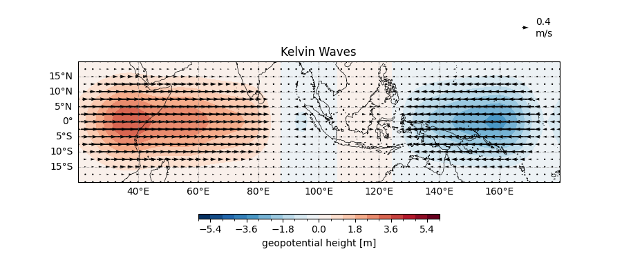
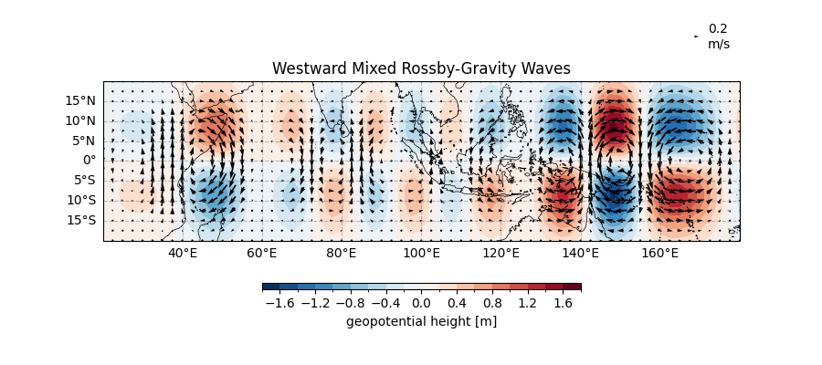
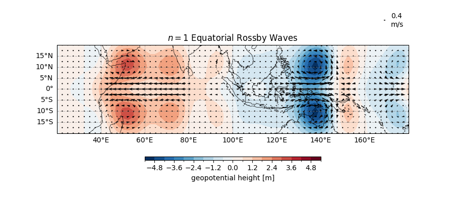
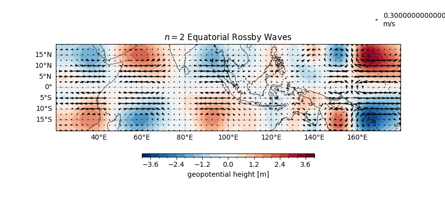

Note
Go to the end to download the full example code.
2D Spatial Parabolic Cylinder Function#
Ever wondered how atmospheric waves boogie along the equator? Let’s explore how to isolate these fascinating dancers (Kelvin waves, Rossby waves, and friends) using parabolic cylinder functions!
Before proceeding with all the steps, first import some necessary libraries and packages
import xarray as xr
import xarray as xr
import cartopy.crs as ccrs
import easyclimate as ecl
Loading the Data#
First, we need some atmospheric data to work with - think of this as setting up the dance floor for our waves:
Tip
You can download following datasets here: Download uwnd_vwnd_hgt_equtorial_2021_2024.nc
uvz_data = xr.open_dataset("uwnd_vwnd_hgt_equtorial_2021_2024.nc")
uvz_data
Isolating Wave Types#
Now for the star of our show: the 2D spatial parabolic cylinder function filter easyclimate.filter.filter_2D_spatial_parabolic_cylinder_function! This function works like a talented bouncer, only letting specific wave types into our analysis:
result = ecl.filter.filter_2D_spatial_parabolic_cylinder_function(uvz_data.uwnd, uvz_data.vwnd, uvz_data.hgt)
result
Visualizing the Waves#
Let’s meet our wave dancers one by one and see their unique moves!
The Graceful Kelvin Wave#
Kelvin waves move eastward with elegant symmetry, like ballet dancers:
fig, ax = ecl.plot.quick_draw_spatial_basemap(figsize=(9, 4), central_longitude=180)
ax.set_extent([20, 180, -20, 20], crs = ccrs.PlateCarree())
# Contour plot for height field
result.sel(wave_type = "kelvin").z.sel(time = "2023-12-15").plot.contourf(
ax = ax,
levels=21,
transform = ccrs.PlateCarree(),
cbar_kwargs={"location": "bottom", "aspect": 50, "shrink": 0.5},
)
# Quiver plot for wind vectors
result.sel(wave_type = "kelvin")[["u", "v"]].sel(time = "2023-12-15").thin(lon=1, lat=1).plot.quiver(
x = "lon", y = 'lat',
u = "u", v = "v",
ax = ax,
scale = 30,
headlength = 5,
minlength = 1.5,
transform = ccrs.PlateCarree()
)
ax.set_title("Kelvin Waves")

Text(0.5, 1.0, 'Kelvin Waves')
The WMRG Wave#
Westward-moving Mixed Rossby-Gravity waves have more complex moves, like contemporary dancers:
fig, ax = ecl.plot.quick_draw_spatial_basemap(figsize=(9, 4), central_longitude=180)
ax.set_extent([20, 180, -20, 20], crs = ccrs.PlateCarree())
result.sel(wave_type = "wmrg").z.sel(time = "2023-12-15").plot.contourf(
ax = ax,
levels=21,
transform = ccrs.PlateCarree(),
cbar_kwargs={"location": "bottom", "aspect": 50, "shrink": 0.5},
)
result.sel(wave_type = "wmrg")[["u", "v"]].sel(time = "2023-12-15").thin(lon=1, lat=1).plot.quiver(
x = "lon", y = 'lat',
u = "u", v = "v",
ax = ax,
scale = 30,
headlength = 5,
minlength = 1.5,
transform = ccrs.PlateCarree()
)
ax.set_title("Westward Mixed Rossby-Gravity Waves")

Text(0.5, 1.0, 'Westward Mixed Rossby-Gravity Waves')
The Rossby Waves#
Rossby waves come in different “generations”, let’s meet the first two:
\([n=1]\) Rossby Wave#
fig, ax = ecl.plot.quick_draw_spatial_basemap(figsize=(9, 4), central_longitude=180)
ax.set_extent([20, 180, -20, 20], crs = ccrs.PlateCarree())
result.sel(wave_type = "r1").z.sel(time = "2023-12-15").plot.contourf(
ax = ax,
levels=21,
transform = ccrs.PlateCarree(),
cbar_kwargs={"location": "bottom", "aspect": 50, "shrink": 0.5},
)
result.sel(wave_type = "r1")[["u", "v"]].sel(time = "2023-12-15").thin(lon=1, lat=1).plot.quiver(
x = "lon", y = 'lat',
u = "u", v = "v",
ax = ax,
scale = 70,
headlength = 5,
minlength = 1.5,
transform = ccrs.PlateCarree()
)
ax.set_title("$n = 1$ Equatorial Rossby Waves")

Text(0.5, 1.0, '$n = 1$ Equatorial Rossby Waves')
\([n=2]\) Rossby Wave#
fig, ax = ecl.plot.quick_draw_spatial_basemap(figsize=(9, 4), central_longitude=180)
ax.set_extent([20, 180, -20, 20], crs = ccrs.PlateCarree())
result.sel(wave_type = "r2").z.sel(time = "2023-12-15").plot.contourf(
ax = ax,
levels=21,
transform = ccrs.PlateCarree(),
cbar_kwargs={"location": "bottom", "aspect": 50, "shrink": 0.5},
)
result.sel(wave_type = "r2")[["u", "v"]].sel(time = "2023-12-15").thin(lon=1, lat=1).plot.quiver(
x = "lon", y = 'lat',
u = "u", v = "v",
ax = ax,
scale = 40,
headlength = 5,
minlength = 1.5,
transform = ccrs.PlateCarree()
)
ax.set_title("$n = 2$ Equatorial Rossby Waves")

Text(0.5, 1.0, '$n = 2$ Equatorial Rossby Waves')
Behind the Scenes: How the Magic Works#
The easyclimate.filter.filter_2D_spatial_parabolic_cylinder_function performs some serious atmospheric wizardry:
Detrending and Windowing: Prepares the data by removing trends and applying spectral windows
Variable Transformation: Creates new variables that better represent wave structures
Fourier Analysis: Identifies frequency and wavenumber components
Projection: Maps the data onto parabolic cylinder functions that match equatorial wave structures
Filtering: Isolates specific wave types based on their characteristic patterns
Reconstruction: Brings everything back to physical space for visualization
- Each wave type has its own signature moves:
Kelvin Waves: Eastward-moving, symmetric about the equator (\(n=0\) mode)
WMRG Waves: Westward-moving with mixed characteristics (\(n=1\) mode)
Rossby Waves: Westward-moving with more complex structures (\(n=2\), \(n=3\) modes)
Total running time of the script: (0 minutes 8.105 seconds)